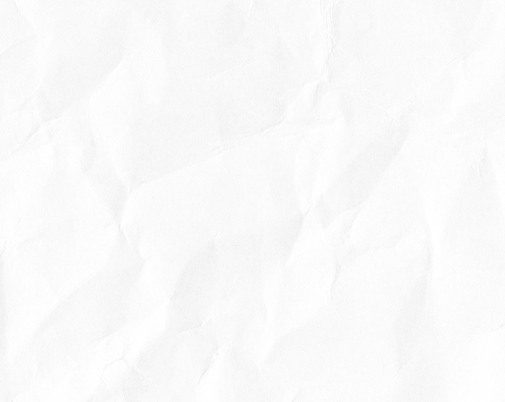
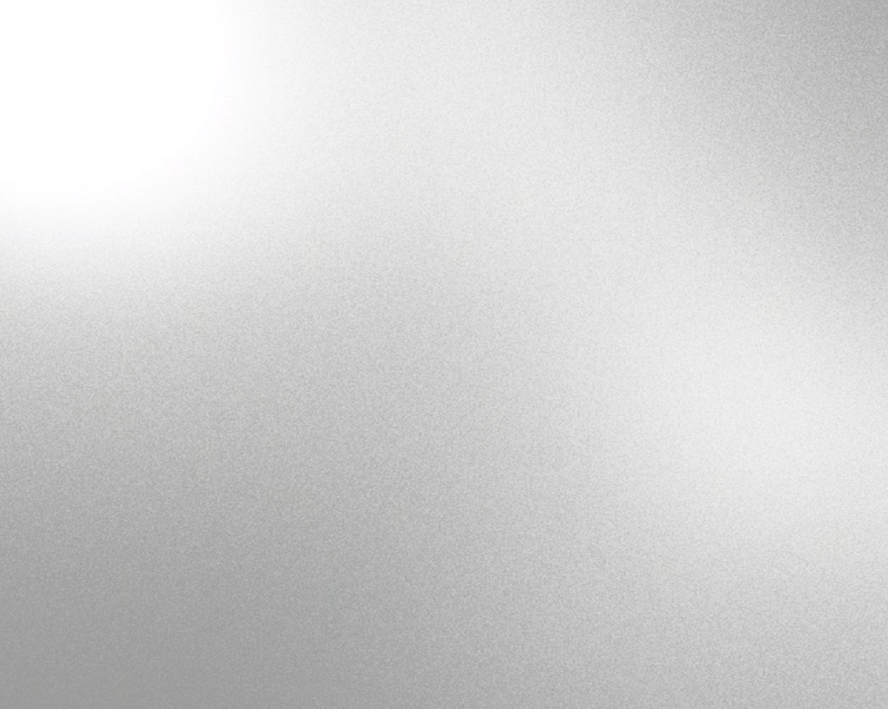
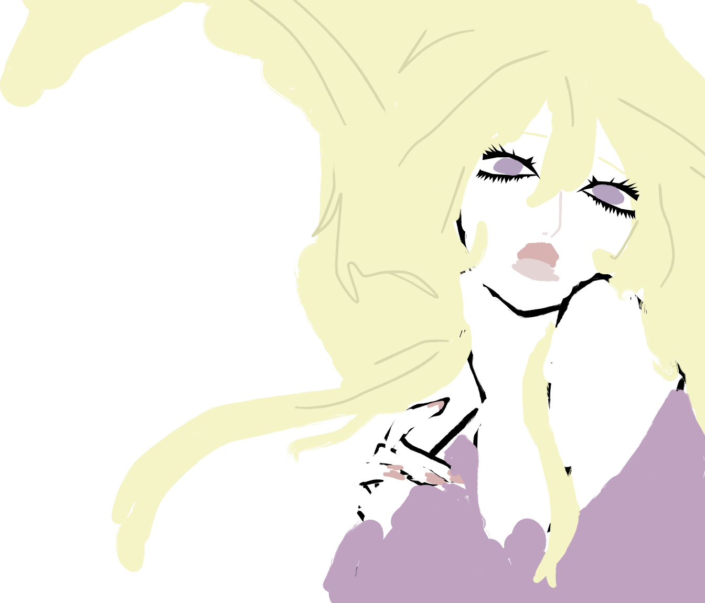
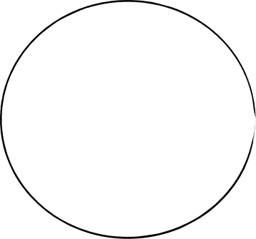
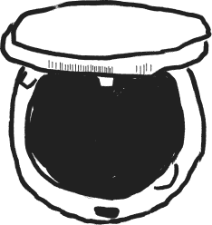
помада
пудра
тушь
консилер
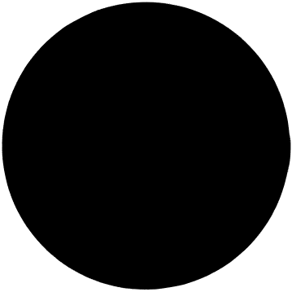
помада
пудра
тушь
консилер
|
Перед нанесением помады человек может ощупать губы пальцами, чтобы понять их форму и границы. Это помогает точнее наметить контур.
Чаще всего предпочтение отдаётся компактной прозрачной пудре. Её удобнее наносить: она не разлетается, а текстура позволяет контролировать процесс кисточкой.
Из-за ограниченной видимости важно наносить водостойкую тушь аккуратно, избегая комочков и не прокрашивая нижние ресницы. При дальнозоркости иногда рекомендуют коричневую или серую тушь.
Консилер наносят строго на проблемные зоны, помеченные тактильно (тёмные круги под глазами, покраснения, пигментные пятна), избегая слишком толстого слоя, который может быть заметен.
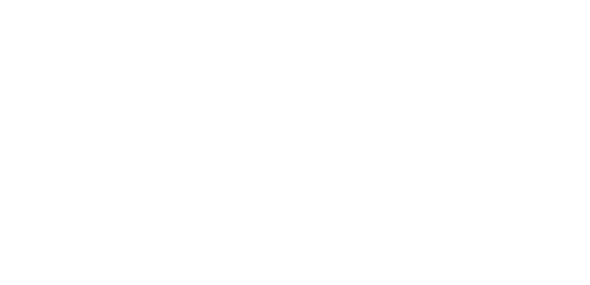
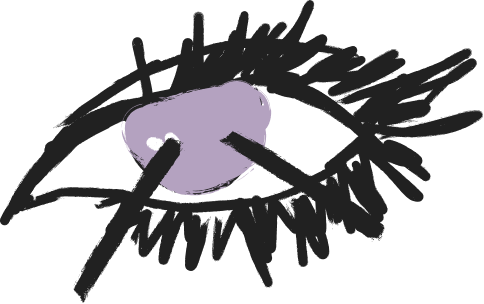
Астигматизм
Это нарушение рефракции, при котором световые лучи, проходя через глаз, не могут сфокусироваться строго на сетчатке. Это связано с тем, что роговица или хрусталик имеют не идеальную сферическую, а вытянутую или асимметричную форму.
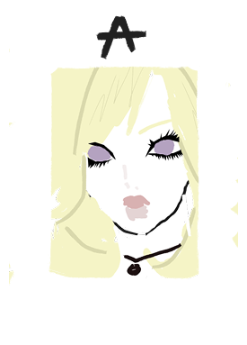
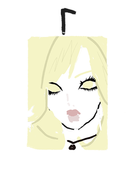
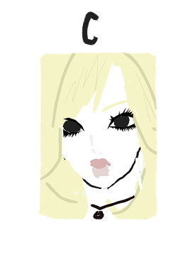
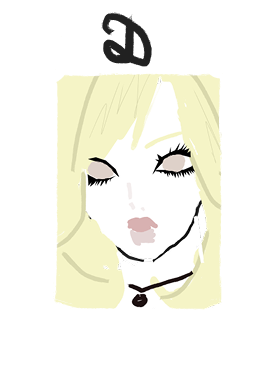
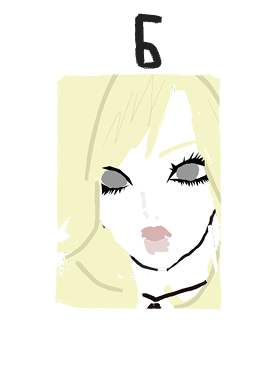
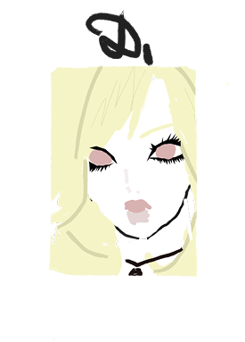
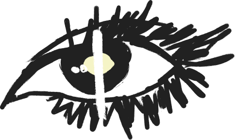
Гемианопсия
Состояние, при котором происходит выпадение части поля зрения на одном или обоих глазах. В переводе с греческого термин означает «половинная слепота», что точно отражает суть нарушения: человек перестаёт видеть одну половину визуального поля — слева или справа относительно центральной вертикальной линии.
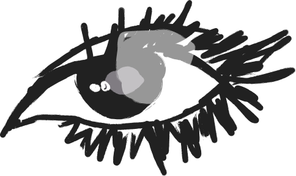
Скотома
Скотома ощущается как участок в поле зрения, где изображение исчезает. Также оно может темнеть или становиться менее четким. Человек видит слепое пятно в центре, сбоку или замечает его только при чтении, вождении, работе с экраном.
Дальтонизм
Цветовая слепота, неспособность человека корректно определять некоторые цвета или их оттенки. Иными словами, это особенность восприятия цвета, отличная от общепринятой нормы.
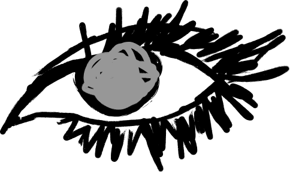
Близорукость
Миопия — это нарушение рефракции, при котором человек хорошо видит вблизи, но предметы, расположенные далеко, кажутся ему размытыми, нечеткими. То есть фокус изображения при заболевании оказывается не на сетчатке, как должно быть в норме, а перед ней.
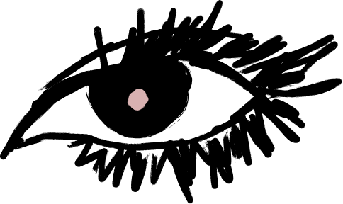
Дальнозоркость
Гиперметропия — это состояние глаза, при котором свет фокусируется за сетчаткой, а не на ней, как в случае с обычной, эмметропической рефракцией. При таком зрении близко расположенные предметы выглядят размыто, а объекты, расположенные вдали, — чётко, хотя и не всегда.
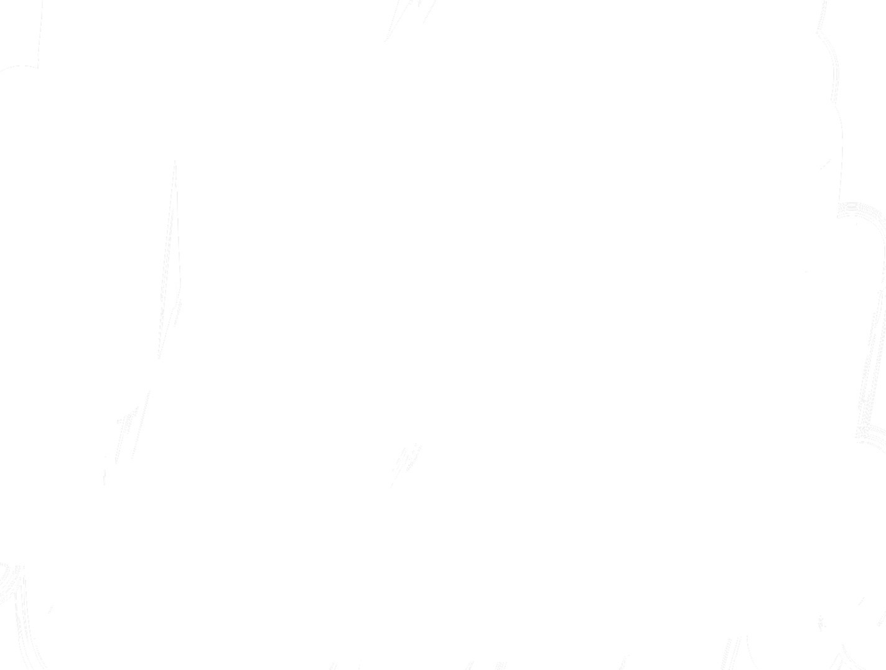